.png)
[5965] 해외선물옵션 빠른호가주문
결정도 주문도
한 박자 빠르게
[5965] 해외선물옵션 빠른호가주문 화면은 변동성이 큰 글로벌 선물·옵션 시장에서 신속하게 대응할 수 있도록 설계된 주문 전용 도구입니다.
호가창에서 원하는 가격대에 대해 한 번의 클릭과 드래그만으로 매수 · 매도 · 정정 · 취소를 즉시 처리할 수 있어 지연 없는 거래가 가능합니다. 또한 일괄 주문, STOP 주문, 잔고 연동 등 다양한 기능을 지원하여 급변하는 해외 시장에서도 매매 전략을 적시에 실행할 수 있습니다.
이번에는 호가주문 화면의 사용 방법을 통해 해외 파생상품 시장에서 대응 속도를 높이는 활용법을 살펴보겠습니다.
해외 선물옵션 거래에서 누구보다도 빠르게,
이 화면이 속도를 내주는 이유!
| 기능 | 특징 |
|---|---|
| 원클릭 주문 | 클릭 한 번으로 매수 · 매도 주문 즉시 실행 |
| 호가잔량 그래프 | 시각화된 호가 데이터로 직관적인 시장 상황 인지 |
| STOP 주문 기능 | STOP 조건을 활용한 자동 주문으로 익절 / 손절 전략 구현 |
| 잔고 연동 | 보유 선물 · 옵션 포지션을 확인하고 신속하게 주문으로 연결 |
| 주요 지표 제공 | 실시간 체결, 상세정보, 일별 거래량 등 투자판단을 위한 다양한 지표 제공 |
쉽고 빠른 원클릭 매매를 위해,
01 주문 전 준비
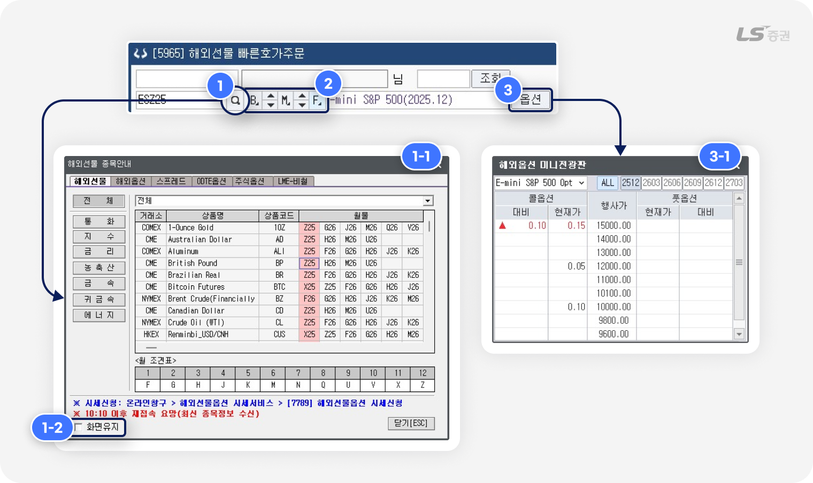
-
1
종목 선택
- (1-1번) 종목 검색 팝업에서 상품군 분류를 통해 근월물, 특정 월물, 행사가별 옵션 등을 선택할 수 있습니다.
- (1-2번) ‘화면유지’ 체크 시 종목 선택 후에도 팝업이 닫히지 않고 유지됩니다.
-
2
종목 전환 버튼
- B 버튼 : 클릭 시 기초자산(Base) 상품군에서 원하는 상품을 선택할 수 있습니다.
- M 버튼 : 클릭 시조회중인 상품의 만기월물(Month)을 선택할 수 있습니다.
- F 버튼 : 옵션 조회 중 클릭 시 해당 종목의 기초자산을 기반으로 한 선물 종목을 조회합니다.
-
3
옵션 종목 선택
- 옵션 종목 거래가 지원되는 선물 종목인 경우 우측에 '옵션' 버튼이 표시되며, 클릭 시 해외옵션 미니전광판(3-1번)에서 월물별 옵션 현재가를 조회하고 선택할 수 있습니다.
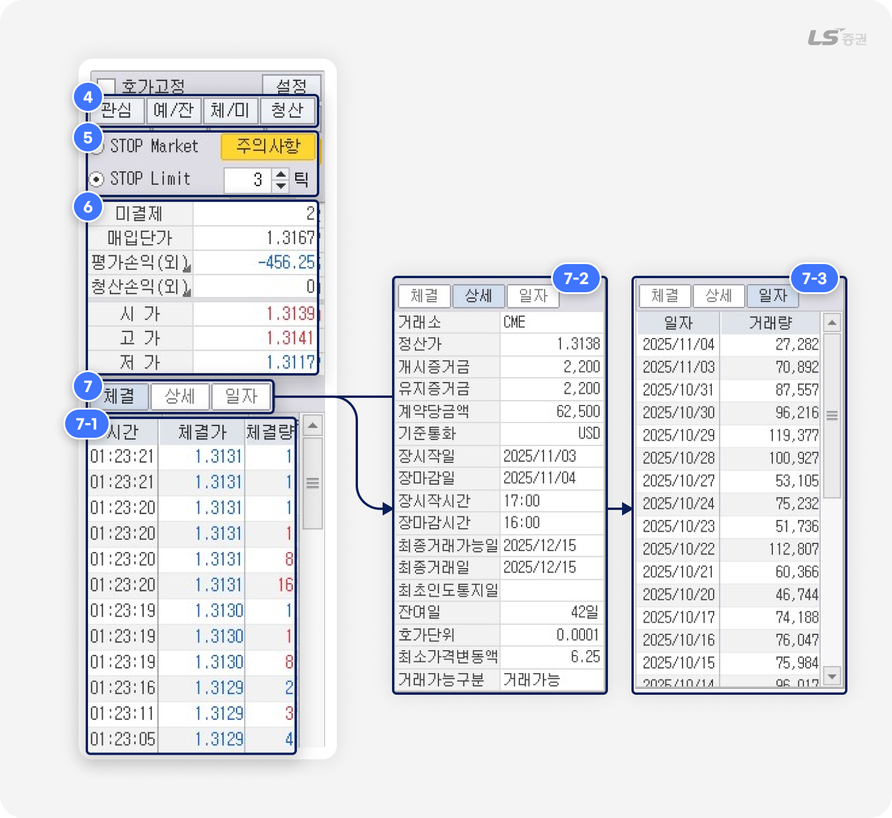
-
4
빠른 화면 이동
- 관심 : [2074] 해외선물 관심종목 화면에서 관심종목을 선택하여 본 화면에 조회할 수 있습니다.
-
예/잔 :
[6027] 해외선물 예수금/잔고현황 화면에서 가용자금 및 보유잔고를 점검하고 보유종목을 선택하여 본 화면에 조회할 수 있습니다.
-
체/미 :
[6022] 해외선물 주문체결/미체결 화면에서 주문내역 및 체결 결과를 확인하고 미체결 주문을 취소할 수 있습니다.
- 청산 : [5974] 해외선물옵션 일괄청산주문 화면에서 보유잔고에 대한 청산 주문을 접수할 수 있습니다.
-
5
STOP 주문방법 선택
- STOP 주문 이용 시 주문 접수 방법을 STOP Market, STOP Limit 중 선택할 수 있습니다.
-
6
종목 시세 조회
- ‘평가손익’ 및 ‘청산손익’ 클릭 시 원화(원)와 외화(외)를 전환하며 조회할 수 있습니다.
-
7
종목 상세정보 조회
- (7-1번) 체결 탭 : 선택 종목의 당일 틱 단위의 체결가와 체결량 내역을 실시간으로 조회합니다.
- (7-2번) 상세 탭 : 선택 종목의 증거금, 잔여일 등 상세 정보를 조회합니다.
- (7-3번) 일자 탭 : 선택 종목의 일별 총 거래량 내역을 조회합니다.
STOP Market 주문 & STOP Limit 주문이란?
-
현재 가격보다 불리한 조건가격으로 주문을 접수한 뒤, 직전체결가(시장가격)이 조건가격에 도달 시 시장가 주문으로 전환하여 접수합니다.
1) 매수주문 규칙 : 조건가격 > 직전체결가(시장가격)
2) 매도주문 규칙 : 조건가격 < 직전체결가(시장가격)
-
STOP Market 주문과 동일하게 현재 가격보다 불리한 조건가격으로 주문을 접수한 뒤, 직전체결가(시장가격)이 주문가격에 도달 시 '조건가격 + 지정한 틱 범위' 이내에서 주문이 체결됩니다.
1) 매수주문 규칙 : 주문가격 ≥ 조건가격 > 직전체결가(시장가격)
2) 매도주문 규칙 : 주문가격 ≤ 조건가격 < 직전체결가(시장가격)
주의하세요!
- 본 화면에서는 해외선물, 해외옵션, OOTE옵션, 해외주식옵션을 거래할 수 있습니다.
- 본 화면에서는 스프레드 종목, LME-비철 종목 거래를 지원하지 않습니다.
- 본 화면에서는 OCO 주문의 접수 / 정정 / 취소 / 일괄취소를 이용할 수 없습니다.
- 옵션 종목은 STOP 주문을 이용할 수 없습니다.
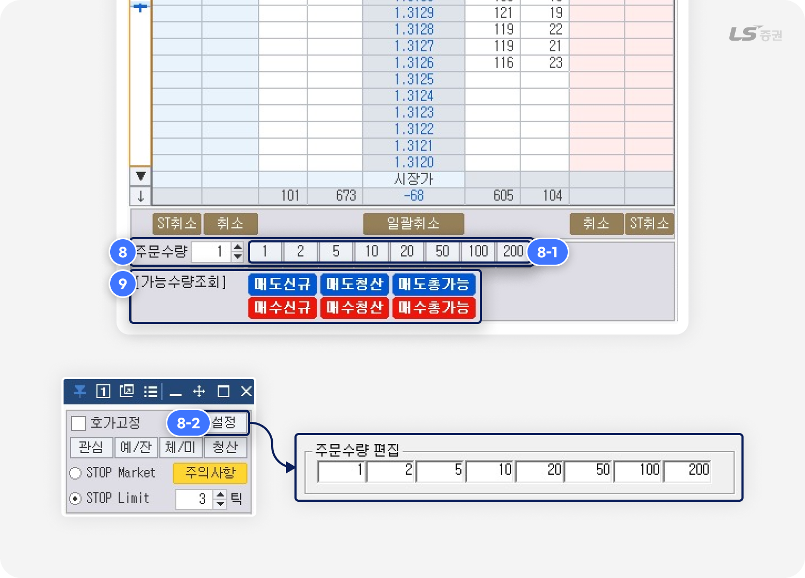
-
8
수량 선택
- 수량을 직접 입력하거나, 빠른 수량 버튼(8-1번)으로 사전에 주문수량을 미리 설정할 수 있습니다.
- 빠른 수량 버튼(8-1번)은 '설정 - 주문수량 편집'(8-2번) 에서 최대 8개까지 지정할 수 있습니다.
-
9
주문가능수량 입력
- 매도신규 / 매수신규 : 신규 포지션으로 계약할 수 있는 수량이 주문수량(8번)에 입력됩니다.
- 매도청산 / 매수청산 : 기존에 보유한 미결제 포지션 중 청산할 수 있는 수량이 주문수량(8번)에 입력됩니다.
- 매도총가능/ 매수총가능 : 신규 계약과 청산 가능한 수량의 합계가 주문수량(8번)에 입력됩니다.
👉 이제 마우스 클릭으로 주문할 준비가 완료되었습니다. 그럼 주문을 시작해 볼까요?
클릭만으로 접수 완료,
02 매수/매도 주문하기
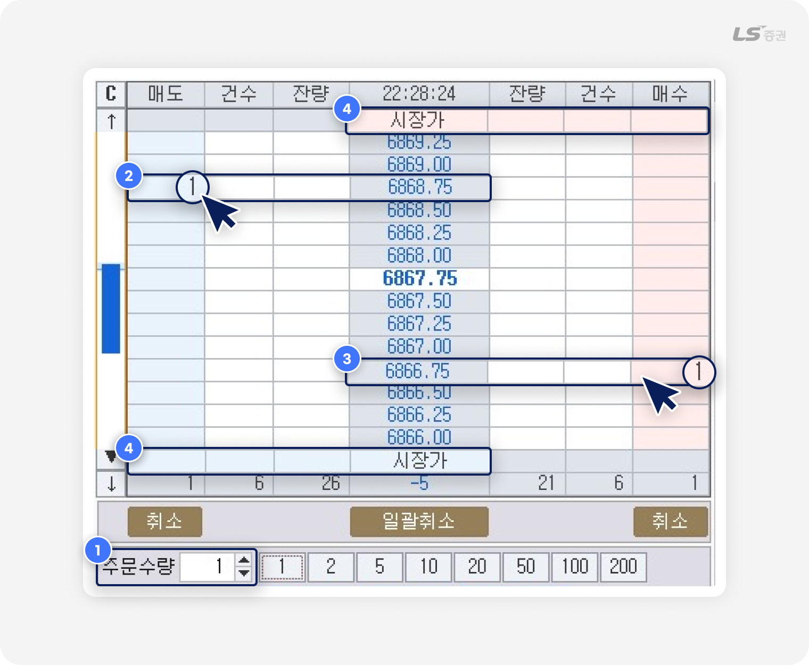
-
1
주문수량 설정
- 매수/매도하려는 주문수량을 입력합니다.
-
2
매도 클릭 주문
- 원하는 호가의 좌측 매도주문 영역을 더블클릭하면 주문이 접수됩니다.
- 주문이 접수되면 매도주문 영역에 해당 호가의 누적 미체결 수량이 표시됩니다.
-
3
매수 클릭 주문
- 원하는 호가의 우측 매수주문 영역을 더블클릭하면 주문이 접수됩니다.
- 주문이 접수되면 매수주문 영역에 해당 호가의 누적 미체결 수량이 표시됩니다.
-
4
시장가 클릭 주문
- 매수 시장가 또는 매도 시장가의 주문영역을 더블클릭하면 시장가에 주문이 접수됩니다.
클릭 한 번으로 더 빠르게 주문하는 방법
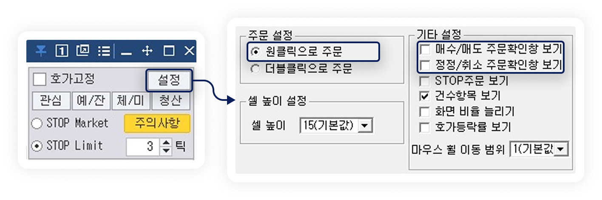
- ‘설정' 버튼에서 ‘원클릭으로 주문‘을 선택하면, 마우스를 한 번만 클릭하는 원클릭으로 주문을 접수할 수 있습니다.
- ‘설정' 버튼에서 ’매수/매도 주문확인창 보기‘ 및 ’정정/취소 주문확인창 보기’ 체크를 해제하면 호가창 클릭 시 주문확인창 없이 주문이 즉시 접수됩니다.
주의하세요!
- ‘주문확인창 보기’ 체크를 해제하면 확인 절차를 생략하기 때문에 되돌릴 수 없는 주문 실수가 발생할 수 있습니다. 이 점에 유의하여 신중히 설정해 주세요.
주문 변경은 드래그로 끝,
03 정정 주문하기
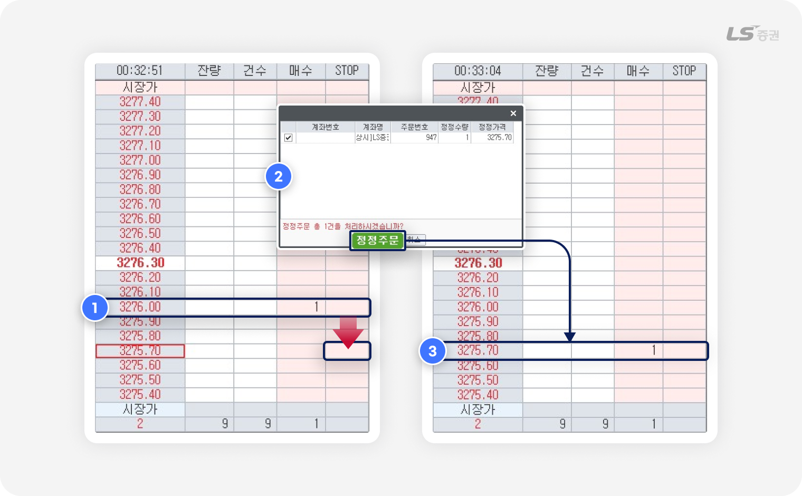
예를 들어 볼까요?
매수 주문가를 3276.00 에서 3275.70 으로 정정하는 경우
-
1
기존 주문을 다른 영역으로 드래그
- 매수 주문 호가 영역(3276.00) 우측 영역을 클릭한 채 드래그해서 정정 호가(3275.70)으로 이동합니다.
-
2
정정 주문 확인
- 주문 확인 팝업창에서 정정 수량과 정정 가격을 확인하고, ‘정정주문‘ 버튼을 클릭합니다.
-
3
정정 완료
- 정정 전 호가 영역(3276.00)의 주문 수량 표시는 사라지고, 정정 후 호가 영역(3275.70)에 주문 수량이 표시됩니다.
주문 정리도 드래그로 쉽게,
04 취소 주문하기
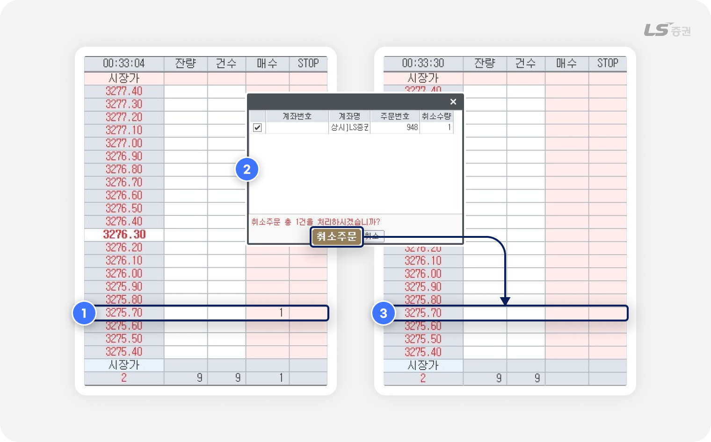
-
1
주문 수량 드래그하여 취소
- 주문 호가 우측에 표시된 수량을 마우스로 클릭 한 뒤 화면 영역 밖으로 드래그합니다.
-
2
주문 취소 확인
- 팝업창에서 해당 주문의 취소 정보를 확인한 후 ‘취소주문’ 버튼을 클릭하면 주문이 취소됩니다.
-
3
취소 완료
- 취소 전 호가 영역(3275.70)의 주문 수량 표시는 사라집니다.
여러 건의 주문을 한 번에 취소하려면?
- 빠르게 대응해야 하는 시장 상황에서 일괄적으로 주문을 취소하는 기능이 유용합니다.
- 화면 하단 ‘취소’ 버튼으로 모든 매수 주문 또는 모든 매도 주문을 한 번에 취소할 수 있습니다.
- 화면 하단 ‘ST취소’ 버튼으로 모든 STOP 매수 주문 또는 모든 STOP 매도 주문을 한 번에 취소할 수 있습니다.
- 화면 하단 ‘일괄취소’ 버튼은 모든 매수 주문과 매도 주문을 한 번에 취소할 수 있습니다.
주문을 더 빠르고 편리하게,
05 기타 기능
호가 정렬 / 새로고침 기능
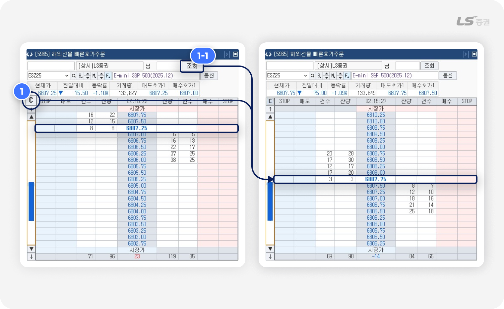
-
1
호가 정렬 버튼
- 호가창에 표시되는 호가 범위가 주요 거래 범위를 많이 벗어난 경우, 현재가가 중앙에 위치하고 매도호가, 매수호가가 상하 균형을 맞춰 표시되도록 정렬할 수 있습니다.
- (1-1번) '조회' 버튼 클릭 시에도 모든 정보를 다시 조회하며 호가 정렬 효과를 얻을 수 있습니다.
호가 단위 이동 기능
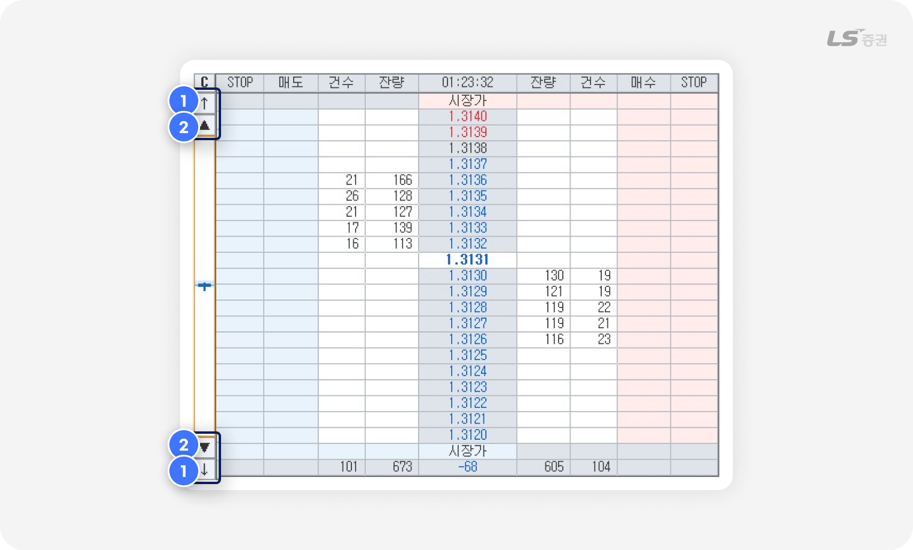
-
1
5호가 단위 이동 기능
- ↑ 버튼 클릭 시 매도호가, ↓ 버튼 클릭 시 매수호가가 5개 단위로 추가 표시됩니다.
-
2
1호가 단위 이동 기능
- ▲ 버튼 클릭 시 매도호가, ▼ 버튼 클릭 시 매수호가가 1개 단위로 추가 표시됩니다.
호가 고정 기능
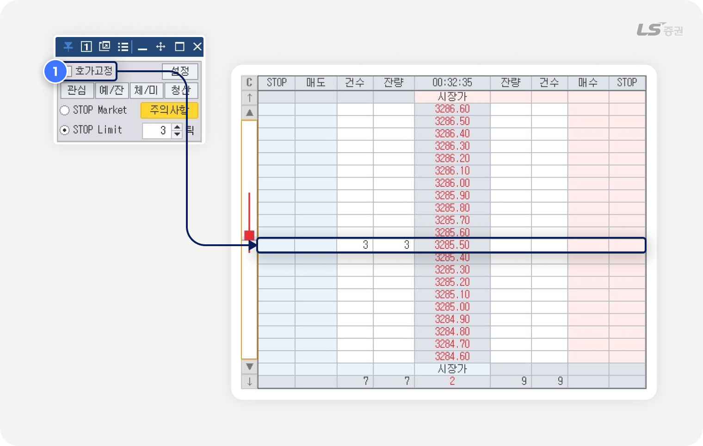
-
1
호가 고정
- 우상단의 ‘호가고정’에 체크 시, 매도호가와 매수호가가 일정하게 고정되며 호가 위치가 변동되지 않습니다.
주의하세요!
- 호가 고정 기능을 사용할 경우 호가가격의 위치가 변동하게 되므로, 가격이 급변하는 종목에서는 예상과 다른 가격에 주문이 체결될 수 있습니다. 주문 접수 전 실제 주문가격을 반드시 확인해 주세요.
STOP 주문
STOP 주문은 현재가를 기준으로 지정한 조건가격에 도달하면 원하는 가격에 주문을 접수하는 조건 주문으로, 변동성이 심한 파생상품 시장에서 전략적으로 이익을 실현하거나 손실을 보전할 때 유용합니다.
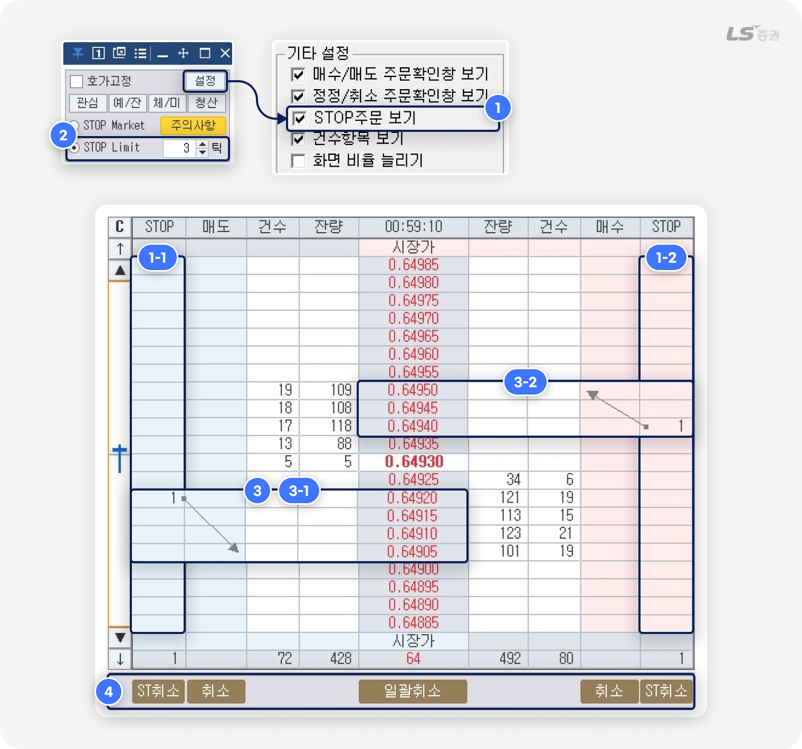
-
1
STOP 주문 컬럼 추가
- STOP 주문을 활성화하려면 '설정' 버튼을 클릭하고 ‘STOP주문 보기’ 에 체크해 주세요.
- STOP 주문이 활성화되면 매수주문과 매도주문 호가창 측면에 STOP 매수(1-2번)와 STOP 매도(1-3번) 영역이 추가됩니다.
-
2
STOP Limit 주문 호가 단위(틱) 설정
- STOP Limit 주문 시, STOP 조건가격을 기준으로 몇 호가(틱) 차이에 주문을 접수할지 지정할 수 있습니다.
-
3
STOP 주문 실행 방식
- 호가 단위(틱) 설정 후 STOP 매수 영역(1-1번) 또는 매도 영역(1-2번)을 더블클릭하면 STOP 주문을 설정할 수 있습니다.
- 현재가가 STOP 주문 영역에 설정한 조건가격 도달 시, STOP Market 주문은 시장가에 실제 주문이 접수됩니다.
STOP Market 주문- 현재 가격보다 불리한 조건가격으로 주문을 접수한 뒤, 직전체결가(시장가격)이 조건가격에 도달 시 시장가로 전환하여 주문이 접수됩니다.
- 1) 매수주문 설정 규칙 : 조건가격 > 직전체결가(시장가격)
- 2) 매도주문 설정 규칙 : 조건가격 < 직전체결가(시장가격)
STOP Limit 주문- STOP Market 주문과 동일하게 현재 가격보다 불리한 조건가격으로 주문을 접수한 뒤, 직전체결가(시장가격)이 조건가격에 도달 시 설정한 주문가격에 주문이 접수됩니다.
- 1) 매수주문 규칙 : 주문가격 ≥ 조건가격 > 직전체결가(시장가격)
- 2) 매도주문 규칙 : 주문가격 ≤ 조건가격 < 직전체결가(시장가격)
3-1 예를 들어 볼까요?
현재가가 0.64930에서 0.64920이 되었을 때 0.64905 이내로 1주 STOP Limit 매도하려는 경우
- STOP 주문 호가 단위(2번)을 3틱으로 설정합니다.
- 조건가격(0.64920) 좌측의 STOP 매도 영역을 더블클릭하면, 화살표가 가리키는 3호가 아래에 주문가격(0.64905)이 설정됩니다.
- 현재가가 조건가격(0.64920)에 도달 시 주문가격(0.64905)에 매도 주문이 접수됩니다.
3-2 예를 들어 볼까요?
현재가가 0.64930에서 0.64940이 되었을 때 0.64950 이내로 1주 STOP Limit 매수하려는 경우
- STOP 주문 호가 단위(2번)을 2틱으로 설정합니다.
- 조건가격(0.64940) 우측의 STOP 매수 영역을 더블클릭하면, 화살표가 가리키는 2호가 위에 주문가격(0.64950)이 설정됩니다.
- 현재가가 조건가격(0.64940)에 도달 시 주문가격(0.64950)에 매수 주문이 접수됩니다.
-
4
STOP 주문 일괄취소
- STOP 매도 / STOP 매수 영역 하단의 ‘STOP취소’ 버튼 클릭 시, 매도 / 매수 STOP 주문 전체가 확인창 없이 일괄 취소됩니다.
- ‘일괄취소’ 버튼 선택 시 일반 매도/매수 주문을 포함한 STOP 매도 / STOP 매수 주문 전체가 확인창 없이 일괄 취소됩니다.
주의하세요!
-
설정한 STOP 주문은 서버에 저장되지 않습니다.
따라서 아래 중 하나에 해당하는 경우 모든 주문이 자동으로 취소되고 조건이 감시되지 않으니 유의해 주세요.
1) 계좌 또는 종목을 변경하는 경우
2) 주문 화면을 닫는 경우
3) HTS를 종료 또는 재시작하는 경우 - STOP 주문은 주문 조건을 설정하는 자동주문의 일종이며, STOP 주문을 설정하는 즉시 매수/매도 주문이 직접 실행되는 것이 아닙니다. 현재가가 STOP 주문에서 설정한 포착가에 도달하면 실제로 주문이 실행됩니다.
- 장 시작 전 동시호가 시간대에 STOP 주문 조건을 설정할 경우, 전일 종가와 당일 시가 간의 갭을 시세 포착으로 판단하고 조건이 충족된 것으로 간주되어 주문이 처리될 수 있으니 유의해 주시기 바랍니다.
- 현재가보다 높은 호가에서 매수 주문이 실행되도록 설정하거나, 현재가보다 낮은 호가에서 매도 주문이 실행되도록 설정한 경우, 현재가가 포착가에 도달하는 즉시 현재가로 주문이 실행됩니다. 예상과 다른 호가에 주문이 체결될 수 있으므로 STOP 주문 설정 시 호가 단위를 꼼꼼히 확인해 주시기 바랍니다.
- PC 환경, 통신 회선 상태 등 외부 요인으로 인해 주문이 처리되지 않을 수 있습니다. 반드시 조건 설정 및 주문 접수 후에 주문 내역에서 실제 주문 처리 여부를 확인해 주시기 바랍니다.
- 시세가 급격히 변동되거나 거래가 급증하는 경우 일시적으로 부하가 발생하여 화면 정보가 올바르게 표시되지 않을 수 있습니다. 이 때에는 재조회(새로고침) 기능을 사용하여 시세, 주문, 잔고를 다시 확인해 주시기 바랍니다.
매매 전략을 세울 때 STOP 주문이 중요한 이유
- STOP 주문은 일반 주문과 달리 지정한 가격 조건에 도달하기 전까지는 나의 주문 물량이 호가창에 표시되지 않습니다. 시장 참여자들에게 나의 매매 전략을 드러내지 않으며 보다 유리한 가격 조건에 매매하는 전략적인 도구로 활용할 수 있습니다.
빠른호가주문 설정
화면 표시 방법이나 주문 방법을 편의에 맞게 설정할 수 있습니다.
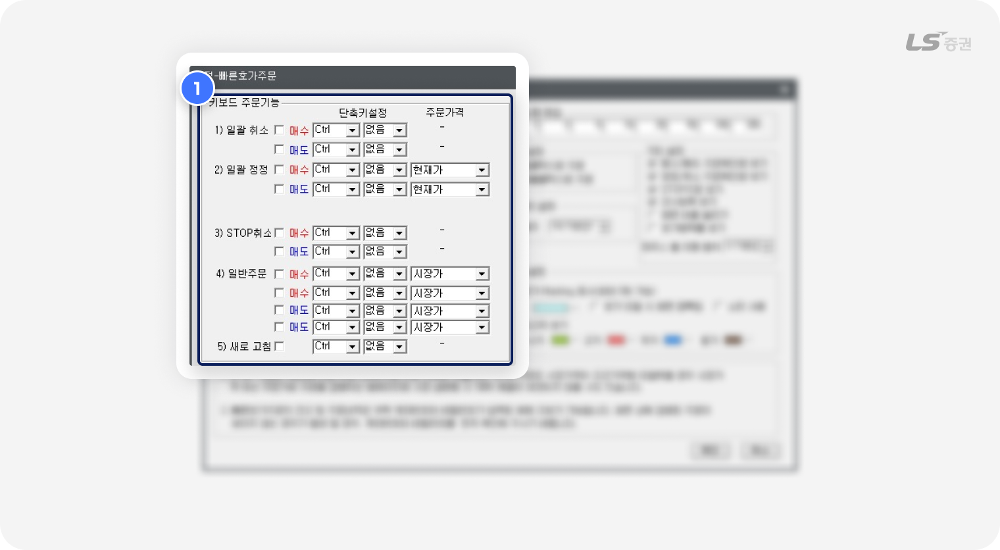
-
1
키보드 주문기능 및 일괄주문 설정
- 일반 주문 및 일괄 주문을 빠르게 접수할 수 있도록 키보드 단축키를 직접 지정할 수 있습니다.
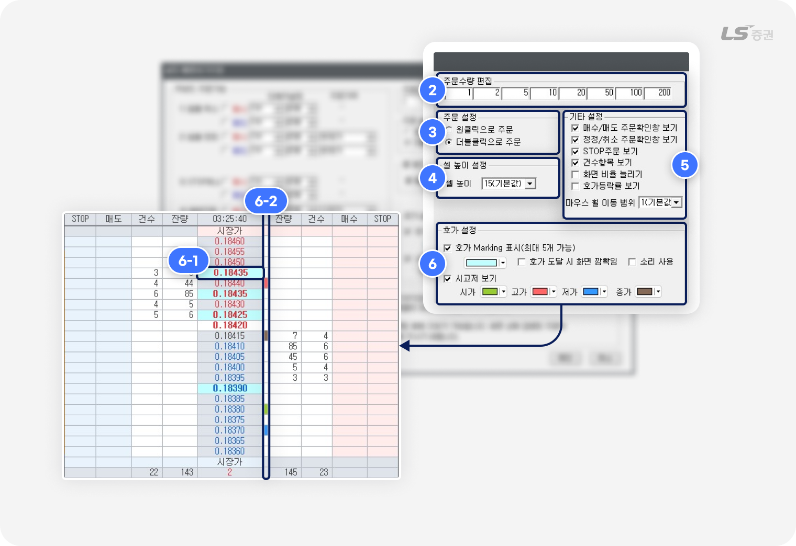
-
2
주문수량 편집
- 클릭 시 해당 수량이 자동으로 주문수량에 입력되는 버튼을 최대 8개까지 설정할 수 있습니다.
-
3
주문 설정
-
호가창을 통한 클릭 주문 방법을 설정할 수 있습니다.
원클릭은 한 번 클릭, 더블클릭은 빠르게 두 번 클릭합니다.
-
호가창을 통한 클릭 주문 방법을 설정할 수 있습니다.
-
4
셀 높이 설정
- 호가 단위별 셀 높이를 조정할 수 있으며, 기본값은 15입니다.
-
5
기타 설정
- 매수/매도 주문확인창 보기 : 매수/매도 주문 접수 전 확인창 표시 여부를 설정할 수 있습니다.
- 정정/취소 주문확인창 보기 : 정정/취소 주문 접수 전 확인창 표시 여부를 설정할 수 있습니다.
- STOP 주문 보기 : 조건 충족 시 주문을 접수하기 위한 호가 조건 설정 영역을 추가합니다.
- 건수항목 보기 : 호가창에서 호가별 ‘주문건수’ 항목 표시 여부를 설정할 수 있습니다.
-
화면 비율 늘리기 :
체크 시 상하비율을 조정할 수 있습니다.
해제 시에는 상하로 매도/매수 호가 수를 늘릴 수 있습니다. - 호가등락률 보기 : 호가창에서 ‘등락률’ 항목 표시 여부를 설정할 수 있습니다.
-
마우스 휠 이동 범위 :
호가창에서 마우스 휠 상하 이동 시 한 번에 움직이는 호가 단위를 설정할 수 있습니다.
기본값은 ‘1’로 휠 한 번에 1호가씩 이동하며, ‘2’로 설정 시 휠 한 번에 2호가씩 이동합니다.
-
6
호가 설정
-
(6-1번) 호가 Marking 표시 :
최대 5개까지 호가 클릭 시 해당 호가에 지정 색상을 표시합니다.
또 마킹한 호가에 도달 시 화면 깜박임 효과나 소리로 알려주는 옵션을 추가로 설정할 수 있습니다. - (6-2번) 시고저 보기 : 당일 시가, 고가, 저가 호가 우측에 지정 색상이 메모로 표시됩니다.
-
[5965] 해외선물옵션 빠른호가주문 화면에서 한순간의 기회를 놓치지 않기 위한 가장 직관적이고 효율적인 주문 방법을 살펴보았습니다.
빠른 판단과 즉각적인 실행이 경쟁력이 되는 해외 파생 시장에서, 속도에 맞춰 움직이는 주문 전략으로 더 탄탄한 거래 환경을 만들어 보시기 바랍니다.
감사합니다!